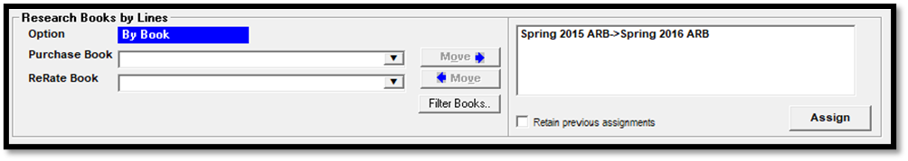

ReRate
The ReRate report is a special report that exports directly to Microsoft Excel, and that is used to compare the audience of a version of a contract or contracts to the current version plus spot moves. The “Purchased” numbers are shown on the left side for the selected revision number, with the “ReRated” version (which reflects the current state of the contract including spot moves) shown on the right side, to allow for easy comparison.
The ReRate report is run from the Traffic report list, under the Proposals section. Microsoft Excel is required to view the report.
Selection Screen Information
When starting the ReRate report from the Traffic report list, the selection screen shown below appears.
The “Dates by” radio button allows you to select how the contract list will be filtered and it also affects what spots will be included in the output.
Week: shows one week of spots for the selected week and for the selected contract or contracts.
Month: shows one month of spots for the selected month and for the selected contract or contracts. Use a number 1 through 12 for the month.
Quarter: shows one quarter of spots for the selected quarter and for the selected contract or contracts. Enter a quarter number such as 1, 2, 3, or 4, and a four digit year.
Contract: selecting “contract” lets you filter the contract list based on the entered date, and includes all the spots for the selected contract or contracts, regardless of date.
Range: enter a date range to filter the contract list by those contracts that are active during the entered date range. Only spots within the entered date range will be included on the report output.
The Advertiser list is a list of all advertisers. Only one advertiser can be selected at a time. Use this list to select the advertiser that the report will be run for.
The Contract list displays all the contracts for the selected advertiser that meet the filter criteria, with the product, contract number, and “purchase revision number” shown. The “purchase revision number” is the revision number that will be shown on the left side of the report output. The list of contracts can be toggled between the original revision number and the latest revision number by pressing the “original” or “latest” radio button that appears under the contract list. Contracts can also be manually set to a specific revision number by selecting it from the purchase revision number field. The list of contracts can be sorted alphabetically by product or in numerical order by contract number by clicking the blue column header.
If the current revision of a contract is entirely canceled (all lines canceled before start or deleted), then the product and contract number will be shown in a red font color, to indicate that it’s canceled before start. The report can still be run for a canceled before start contract. The red font color is used to visually differentiate a canceled before start contract (in red) from a contract that is not canceled (in black). (Note also that this does not apply to a contract where there are lines without spots but not canceled before start or deleted.)
To select a contract from the contract list, simply click once in the “Gen” column. Click again to unselect it. All listed contracts can be selected by clicking the “Select All” checkbox.
Note: contracts with no demographic category defined for the original revision number are excluded from the contract list, even if they meet the other filter criteria. Also only scheduled Holds and Orders are used. If a revision was made to a scheduled Hold or Order, to be able to use that revision number, schedule the Hold/Order before launching the report.
The Spot Length box lists all allowed spot lengths. At least one spot length must be selected to run the report. The “Select All” checkbox can be used to select all spot lengths.
Research Options
Research Book Name: this setting determines which research book will be used for the ReRate comparison.
- Vehicle default: The ReRate research numbers will be computed from the vehicle default book. If the “Set Book by Line” button is pressed when this radio button is selected, then the ReRate Book shown on the Research Books by Line screen will be pre-populated with the vehicle default book.
- Closest to air date: The ReRate research audience numbers will be computed from the book that is closest to each spot air date for each spot, using the best fit daypart rules. Closest means closest to but prior to or equal to the spot air date, using the Research Book Date. If multiple books are used on a single line, the report will show each book used. The ReRate population for a line uses the population from the book used by the line’s first spot within the selected date range. If the “Set Book by Line” button is pressed when this radio button is selected, then the ReRate Book shown on the Research Book by Line screen will be pre-populated with the closest to air date book. If there is more than one book, only one will be displayed on the Research Books by Line screen (all books will be displayed on the report output for the individual lines).
- Contract line: With this option, the ReRate book will be set to the purchased contract book, or the ReRate book can be set on the Research Books by Line screen. When accessing the Research Books by Line screen with the Contract Line radio button selected, it defaults to the “By Book” view.
- None: ReRate information will be blank in the Excel export file. If selected, the columns to include will be automatically selected (Cost, Rating, and CPP/CPM). With this selection, in the Excel file, if the audience value (AQH) is manually typed in, the other related fields will be computed (Gimp, GRP, CPP, CPM).
- Set Book by Line: this button is used to set the ReRate books for each line on a separate screen. See the “Research Books by Line screen” section below for more details on this method.
Purchase Contract Demo: Select which contract demo is to be used in all research computations, using either the primary demo, or the 2nd, 3rd, or 4th demo. Only one demo can be chosen. The Override radio button when selected allows any demo category to be chosen (from the demo category dropdown), whether it’s on the contract or not.
Rows to include:
- Spot MG/Outside: This setting is used to determine if makegoods/outsides should be included with the original row, or broken out separately onto a separate makegood row. If “Spot MG/Outside” is checked, then makegoods and outsides will be shown on separate lines. Makegoods on the same vehicle/daypart will be grouped together with the unit count reflecting the number of makegoods that aired on that vehicle/daypart. If “Spot MG/Outside” is not checked, makegoods and outsides will be included with the ReRate unit count for the original line (not broken out separately on a separate line).
- Invoice bonus: When checked, fill spots that are meant to be included on invoices (+ fills) will be shown below the contract line research information in the ReRate section, grouped by vehicle. The “best fit” algorithm is used to determine the daypart to get the audience values from, using the Research Book Name setting to get the research book. A separate total row will be generated that shows the impact of the fill spots on the contract and advertiser totals. If “invoice bonus” is not checked, then fill spots that are shown on invoices will be ignored and will have no impact on the research computations.
- Hidden bonus: When checked, fill spots that are meant to be excluded from invoices (- fills) will be shown below the contract line research information in the ReRate section, grouped by vehicle. The “best fit” algorithm is used to determine the daypart to get the audience values from, using the Research Book Name setting to get the research book. A separate total row will be generated that shows the impact of the fill spots on the contract and advertiser totals. If “hidden bonus” is not checked, then fill spots that are excluded from invoices will be ignored and will have no impact on the research computations.
Note: Bonus spots with a population of zero are not included in the report output.
Bonus By: The “Bonus by vehicle” option will group bonus/fill spots together by vehicle. The “Bonus by vehicle, daypart” radio button will list the fill spots by vehicle and daypart, so a single vehicle of fills could have multiple rows for each “best fit” daypart detected for the fill spots.
Compute Index By: The Index value compares the Gimp or GRP of the ReRate section to the Purchased section. An index value greater or equal to 100 will be shown in green. If less than 100, it will be shown in red.
- Gimp: The index value is calculated using the ReRated Gimp divided by the purchased Gimp and multiplied by 100.
- GRP: The index value is calculated using the rerated GRP divided by the purchased GRP and multiplied by 100. The index is rounded to two decimal places.
- For makegoods broken out separately, the ReRated makegood AQH and the Purchased AQH of the ordered vehicle line is used.
Exception: These settings are used to set how makegood/outside and missed spots should be handled for the ReRate portion of the report.
- Treat MG/Outsides as ordered: When checked on, any makegood or outside spots will use the ordered vehicle, daypart, and week when calculating the ReRate values for that spot, as if the spot aired as ordered. The “rows to include Spot MG/Outside” checkbox gets grayed out when this option is checked on, as it cannot be used with the “Treat MG/Outsides as Ordered” feature. When not checked on, the ReRate values for makegood and outside spots will be based on where the spots are booked.
- Treat Missed Spots as ordered: When checked on, any missed spots that exist will use the ordered vehicle, daypart, and week when calculating the ReRate values for those spots, as if the spots aired as ordered. When not checked on, the missed spots will not count toward the aired spot count portion of the ReRate section.
Output Options
Header Layout: These settings determine how the header (agency, advertiser, product, order number, purchased revision number, ReRate revision number, demo category, contract population, ReRate population, and period) of the report is displayed.
- Separate: the header portion of each contract is shown above the line portion.
- Merged with each research row: shows all the header information for each row of the report, including bonus and total rows, instead of showing the header information separately from the line section.
Show: These settings affect the display of different options.
- Summary Only: Only the summary lines will be shown in the Excel export. (The “Rating” checkbox will be disabled for the Summary version.)
- Include Inactive Lines: This setting is used to determine whether lines that are inactive (have no spots) for the Purchased and ReRate revision numbers for the requested date period should be included or not. For example, there is a contract that runs for week 1 and 2, and there's no spots for line 1 in week 1, and the report is run for week 1 only (not the entire contract, and only for the period where the line has no spots). If "include inactive lines" is checked on, line 1 will be shown (with zero spots). If "include inactive lines" is not checked on, then line 1 will not be shown, as it is inactive during the selected date period. For this report, the concept of an “inactive line” refers to a line that is not active for the specified date period. The rules for a Canceled Before Start (CBS) line are different. A CBS line is always excluded if it is canceled before start on both the selected Purchased and ReRate contract revisions. If there are spots for the selected date period for the CBS line on either the Purchased or ReRate revision, then the CBS line will be included (regardless of the “inactive line” setting).
- Package only: Hidden lines will not be displayed in the Excel export but used to compute the Package research numbers that will be displayed.
- Hidden only: Hidden lines will be displayed beneath the package line in the Excel export. The package line research numbers will not be displayed. The hidden lines will be indented.
- Package and hidden: Hidden lines will be displayed beneath the package line in the Excel export. The package line research numbers will be displayed.
Columns to Include: this setting determines which columns to include in the report output.
- Cost: The spot rate and extended total will be included.
- Rating: The rating will be included.
- CPM/CPP: CPM and CPP will be included.
- Audio Type: When this is checked on, the two letter Audio Type from the contract line will be included.
- Lineup #: The Act 1 lineup number defined with the contract line will be included. This option is only available when the Act 1 lineup feature is enabled. On version 8.1 and above, the Act 1 Lineup Code and Settings are displayed. The Act 1 Lineup Code is shown after the text “Act1Code=”, and the settings (T, S, C, and/or F), are shown after the text “Act1Stored=”.
- Price Type: When checked on, an additional Price Type column will be displayed for each non-bonus/fill line, using the price type set on the contract line. If the line price is set to a dollar value or $0, the price type will be shown as “paid”. The other possible price types are: ADU, Bonus, MG, N/C, Package, Recap, and Spinoff. (This option is not available for the summary version of the report.) (Version 8.1 and above only.)
- Comment: When checked on, line comments from the latest contract revision will be shown for non-bonus/fill lines. (Version 8.1 and above only.)
Purchase(P) and ReRate(R):
- Separate columns: All Purchased research numbers and all ReRate research numbers will be grouped together (Purchased on the left, ReRate on the right).
- Pair columns: Purchased and ReRate columns that have the same column header will be grouped next to each other.
Export to CSV: when this checkbox is checked on, when running the ReRate report, it will be exported to a CSV file (instead of being sent to Excel) so that the report can be run even if Microsoft Office isn’t installed on the system running the report. The CSV version has some minor formatting differences (no background or font colors, no bold letters, etc.) from the Excel version of the report, and does not support the “Pair columns” setting, but is otherwise identical. To generate the CSV version, check on the “Export to CSV” option and press the Generate report button (when ready to run the report).
Closest Books: This button can be pressed to bring up a screen where books can be moved to the “Books to Exclude” section to have those books be excluded when running the report using the “Closest to Air Date” option (either from the “Closest to Air Date” selection from the “Research Book Name” area, or when using the “Closest to Air Date” option on the “Set Book by Line” screen).
For example, if there was a book that would ordinarily be included as the “closest to air book” for a contract line, but for one reason or another should not be included as a ReRate book, if it’s in the “Books to Exclude” list, it will be bypassed and another book (if there is another book available) or no book (if there are no other valid available books) will be used instead.
Generate Spreadsheet: To run the report, once the desired options have been selected, press the “Press to Generate Spreadsheet and Transfer to Excel” button.
Research Books by Lines Screen
Press the “Set Book by Line” button to access the “Research Books by Lines” screen, which is used to set the ReRate book for each line. There are four different views on this screen that allow for four different methods of setting the ReRate book: “By Line”, “By Vehicle”, “By Contract/Line”, and “By Book”. The four views can be toggled between by pressing the blue Option toggle in the upper left corner of the screen. The ReRate book can also be set individually for each line, one at a time, using the ReRate book name field. When accessing this screen with the “Vehicle Default” or “Closest to Air Date” radio buttons selected, the ReRate Book shown will be pre-populated accordingly.
The following fields are shown on this screen for the selected contracts:
Contract: the contract number for each selected contract.
Line: the line number for each line on each selected contract.
Vehicle: the vehicle name. Package vehicles are shown in a dark blue font color, and hidden lines are shown indented in a light blue font color. Conventional lines are shown in a black font color.
Daypart: the ordered daypart name. For bonus/fill spots, it shows the word “Bonus”. For MG/Outsides, it shows the word “MG’s”. Both Bonus and Makegood/Outside spots are shown in italics, below the ordered line they came from.
Length: the spot length for the line.
Flight date: the start and end date of the contract line. If the latest revision of the line is canceled before start, the letters “CBS” will be shown in red, and the ReRate book cannot be set for the line.
Purchase Book Name: the ordered research book associated with the contract line.
ReRate Book Name: the name of the ReRate book, the research book that will be used to calculate the audience values for the ReRate section of the report. A green font color indicates the vehicle default is used. Blue indicates the “closest to air date” option is used.
Message area: the lower part of the screen shows information about the ReRate book assignments that were performed.
Filter Books: the Filter Books button is used to filter the list of available ReRate books to reduce the number of ReRate books there are to choose from. You can also select “vehicle default” to use the default vehicle research book as the ReRate book or “closest to air date” to use the books that are closest to the air date of each spot as the ReRate book (for the “by line”, “by vehicle”, and “by contract/line” options).
Book Dates: The dates entered here will filter the available books in the research book dropdown using the Research Book Date.
Book Vehicle: A vehicle can be selected from this vehicle list to filter the research books to only include books that have the selected vehicle on it. (Important note: you can only assign a book to a line if the line vehicle is defined within the selected book.) This option is not available for the “By Book” method.
Press the Apply Filter button to apply the chosen filter criteria to the list of ReRate books.
Retain Previous Assignments: when assigning ReRate books, if “retain previous assignments” is checked on, any lines that were previously assigned a ReRate book on this screen will be skipped by the assignment process. (Note: ReRate book assignments are not permanent and are only used when running the report.) To allow the system to overwrite previously assigned books, uncheck this option.
Mouseover tooltip: On the Research Books by Line screen, hold the right mouse button down to see a mouseover tooltip that displays the contract number, line number, daypart, and vehicle name of the line that the mouse is over. This can be used to see the full vehicle name for a vehicle with a longer name. To make the tooltip go away, release the right mouse button.
By Line
The By Line option is used to set the ReRate book for all lines, or for all MG/Bonus lines, or for all lines except MG/Bonus lines.
To assign the ReRate book by line, select the ReRate book from the list of books, then select one of the line options:
- All lines: the chosen ReRate book will be assigned to all valid lines.
- MG/Bonus only: the chosen ReRate book will be assigned to Makegood/Outside and Bonus lines only.
- All except MG/Bonus: the chosen ReRate book will be assigned to all valid lines except for Makegood/Outside/Bonus lines.
Press the Assign button to assign the selected ReRate book to the selected lines.
By Vehicle
The By Vehicle option is used to set the ReRate book for a specific vehicle, chosen from the vehicle dropdown on the right side of the screen.
After selecting the ReRate book to use and the vehicle, press the Assign button.
By Contract/Line
The Contract/Line option is used to set the ReRate book for a specific lines on a contract.
Select the contract number from the list of contracts. To assign the ReRate book by line number, after selecting the contract, type in the line numbers to use, following the examples shown on the screen.
By Book
The By Book option is used to “map” a specific purchased book to a specific ReRate book.
To map books: pick one of the purchased books from the Purchase Book dropdown (only the purchased books from the selected contracts will be listed, and they are shown in alphabetical order). You can also start typing in a book name. On the By Book option, as you type, it will refresh the list of ReRate books with books with names that contain the text you type in somewhere in the book name. For example, if you type in the number 2021, it will find any book with 2021 somewhere in the name. The text typed in is not case sensitive. You can also separate text with a space to search for multiple pieces of text. After finding the ReRate book to use, pick the ReRate book to map it to from the ReRate book dropdown (these books will be automatically filtered to only include books that match at least one line from the list of selected contracts), then press the Move-> button to move it to the box on the right.

As purchased books are mapped to a ReRate book, they are removed from the purchase book dropdown list. Multiple books can be mapped in this way and assigned all at once. Press the Assign button to assign the ReRate books following the book mapping that was selected.
The <-Move button can be used to move mapped books back to the Purchased and ReRate section before assigning them to lines, for example to fix a mistake such as when the wrong ReRate book was accidentally selected.
When the ReRate book has been assigned for a purchased book on the By Book view, the purchased book gets added back into the purchased book list box, but at the bottom, so it can be reassigned if necessary. The used books are sorted to the bottom of the list to make it easier to work through all the purchased books.
The list of potential ReRate books can be filtered by date to reduce the number of available ReRate books, for example, to only show the books from the last year.
To filter the list of potential ReRate books, press the Filter Books button, and then, in the left most calendar dropdown, enter the earliest book date to include. The “to” date is for entering the latest book date to include, and can be left blank. Then press the Apply Filter button. At that point, the list of ReRate books will be filtered using the entered filter range.
Assigning Books
When assigning the ReRate book, if there are lines that do not get the ReRate book assigned to it, it is because that vehicle is valid for the selected ReRate book. A warning message will appear when the system is unable to assign a chosen ReRate book to a line.
For cases like this, the correct ReRate book can either be selected manually from the list box that appears in the white ReRate Book Name field for that line, or by using a different book.
If the Clear Books button is pressed, the ReRate books will be cleared from the lines, and the purchased book dropdown list will be repopulated with all the purchased books for the selected contracts. This can be used to start over if mistakes have been made when assigning the ReRate books.
Once all the ReRate books have been assigned, press OK to return to the main report screen where the report can be generated. If there are lines without a research book assigned, a warning message will appear. In most cases, a research book should be assigned to each line, unless ReRated numbers are not needed for specific lines. Press Yes on the warning message to leave those lines as is, without research books being assigned to them, or press No to return focus to the Research Books by Line screen and to assign books to those lines.
Report Output
When you’re ready to run the report, press the button at the bottom of the screen labeled “Press to Generate Spreadsheet and Transfer to Excel”. This report works differently from other Traffic system reports in that it exports directly to Microsoft Excel, where it can be viewed and edited if needed and then saved. After pressing the Generate button, once the report has been generated, a notification message will appear that reads “This report will be sent to Excel for you to review and save”. Pressing OK on this message will open the report in Excel.
Important Note: this report requires Microsoft Excel to run, and must be saved manually in Excel.
When the report appears in Excel, you can save it or view and edit it if needed. An example of the report is shown below. This is the detail version, which displays each line (package only, or package and hidden, depending on the report options that were selected.)
This report is organized with a header section in the upper left corner, followed by the line number, vehicle, daypart, audio type, Act 1 Lineup info (if enabled), length for each line, and spot rate, followed by a “Purchased” section, which uses the selected purchased revision number from the report selection screen, and a “ReRate” section on the right, which reflects the current state of the contract, including spot moves.
Alternatively, the report can be run using the “Merged with each research row” option, which adds columns for each header field, instead of showing a separate header section.
As another alternative, the Pair Columns option will display the Purchased and ReRate columns next to each other, as shown in the picture below.
A summary version of the report can also be run by checking on the “Summary Only” checkbox. The summary version (shown below) includes a summary line for each selected contract, rather than listing each contract line individually.
When running the report with the “Research Book Name” of “None”, only the Extended Total and Unit count is shown. On this version, you can type in the AQH in the appropriate column, and the other values, such as the Rating, CPM, CPP, etc., will be calculated automatically based on the AQH that you type in.
Bonus spots are shown at the bottom of the report, grouped by vehicle or by vehicle and daypart (depending on report settings), with the word “Bonus” in the line number field, as shown in the example below. When bonus spots are included, the contract total, bonus total, and contract total with bonus are shown on separate rows.
After viewing the report, it must be saved in Excel. Simply press the Save button in Excel and follow the on-screen prompts to name and save the report.